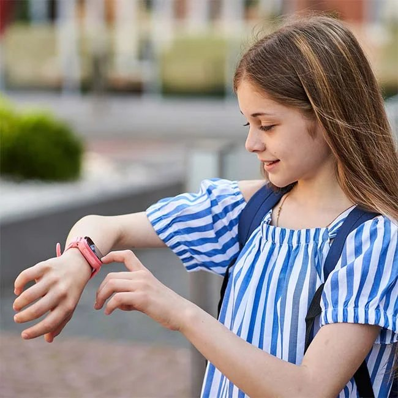

Fotonikk & Optikk · Horten (Norwegian Microtech Valley)
Lynrask autofokus som etterligner det menneskelige øyet
poLight ASA i Horten utvikler den patenterte polymerlinsen TLens® – bygget for ekstremt rask fokus, minimalt strømforbruk og kompakte kameraer innen industri, AR, helse og mobil.
Dette hjelper vi deg med
Vi leverer gjennomtenkte løsninger med høy faglig standard, forutsigbarhet og personlig oppfølging.
-
01
TLens® justerbar mikrolinse
Erstatter tradisjonelle elektromekaniske fokusmotorer (VCM) med en ultratynn piezo-polymerlinse som fokuserer på millisekunder.
-
02
Industriell strekkodeskanning og maskinsyn
Gir konstant synsfelt, «all-in-focus»-bilder og uovertruffen levetid i krevende logistikk- og produksjonsmiljøer.
-
03
Utvidet virkelighet (AR) og bærbar teknologi
Lav vekt, ekstremt lavt effektforbruk og ingen elektromagnetisk støy gjør TLens® ideell for smartbriller og hodesett.
-
04
Medisinsk avbildning og konsumentkamera
Referansedesign, ASIC-drivere og evalueringssett for endoskopi, kirurgiske kameraer, webkameraer og smarttelefoner.
Om poLight ASA
poLight ASA er et børsnotert norsk teknologiselskap med base i Horten, bygget på nærmere to tiår med forskning innen justerbar optikk og MEMS-teknologi.
Ved å etterligne måten det menneskelige øyet fokuserer på, setter TLens® en ny global standard for hastighet og bildekvalitet i kompakte kamerasystemer.
- Horten – Hovedkontor og FoU
- TLens® – Patentert MEMS-optikk
- 10x raskere – Enn tradisjonell VCM
Glimt fra virksomheten
Utvalgte bilder fra våre prosjekter, produkter og arbeidshverdag.

Slik jobber vi
En ryddig og oversiktlig prosess fra første henvendelse til ferdig leveranse.
-
STEG 01
Uforpliktende dialog
Ta kontakt via skjema, e-post eller telefon og fortell kort hva du ønsker hjelp til.
-
STEG 02
Kartlegging og løsningsforslag
Vi går gjennom behovene dine og gir deg konkrete råd, prisoverslag eller avtaler befaring.
-
STEG 03
Trygg gjennomføring
Arbeidet eller leveransen utføres til avtalt tid og pris, med tett oppfølging hele veien.
Klar for en uforpliktende prat med poLight ASA?
Send oss en melding i dag, så hjelper vi deg med rådgivning, priser eller et tilbud tilpasset dine behov.
Ta kontakt
Vi ser frem til å høre fra deg. Ta kontakt direkte eller bruk skjemaet, så svarer vi deg raskt.
- E-postinfo@polight.com
- OmrådeFotonikk & Optikk · Horten (Norwegian Microtech Valley)
- ResponstidVi svarer normalt innen én arbeidsdag